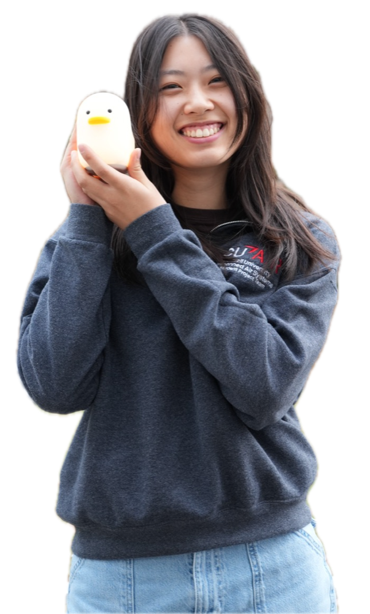

Plane Parent
Interface with an autonomous aircraft for displaying/ graphing telemetry and catching potential issues.

I'm a Computer Science and Mathematics major at Cornell University with a passion for full-stack development and robotics!
When I'm not developing applications for autonomous flight, teaching Cornell's OOP and Data Structures course, or working on ML research for 3D modeling the aorta, you can find me reading a good book, practicing tae kwon do, or playing Crossy Road.
Interface with an autonomous aircraft for displaying/ graphing telemetry and catching potential issues.
Python script for producing a 3D mesh of an aorta by exploring centerlines through the blood vessel tree.
Youtube series for explaining discussion exercises for Cornell's CS 2110 Data Structures course.
Optimize autonomous trajectories using flight simulation by maintaining a ground control station web application • Design automatic VTOL transition and acceleration capabilities required for target positioning and path planning
Develop a diffusion-based framework to build 3D meshes of aortas from CT volumes for CFD simulation • Optimize the reconstruction pipeline for 3D hemodynamic modeling and analysis
Provide instruction and feedback for a core Object-Oriented Programming and Data Structures (Java) course • Lead discussion sections and office hours on topics such as graphs, recursion, binary trees, and sorting algorithms
I'm always happy to chat. The best way to reach me is by email.
ejyhur@gmail.com